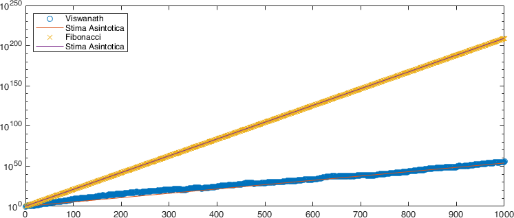
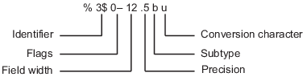

An introduction to MATLAB
Contents
An introduction to MATLAB#
MATLAB / Simulink is a software tool for:
Performing mathematical calculations and signal processing,
Data analysis and visualization: you have several graphical tools,
Modeling of physical systems and phenomena,
Testing and simulation of engineering projects.
The MATLAB Desktop#
Fig. 1 The MATLAB Desktop#
The command window is where you type MATLAB commands following the prompt:
>>
The workspace window shows all the variables you have defined in the current session. Variables can actually be manipulated within the workspace window.
The command history shows all MATLAB commands you have used recently, including past sessions as well.
The current folder shows all files in whichever folder has been selected to be the current folder.
Arithmetic operations and order of operations#
The basic operations are addition (
+), subtraction (-), the multiplication (*), division (\), exponentiation (^),The order of the operations is the canonical one used in mathematics and follows the usual conventions of a scientific calculator
Complete all operations in parentheses
()using the following rules of precedence,Exponentiation (left to right)
Multiplication and division (left to right)
Addition and subtraction (from left to right)
Example
For example, consider the following operations:
30/5*3 5*2^4+4*(3) -1^8 8^(1/3)
Variables#
As in any programming language, MATLAB makes use of variables, which, in computer science, are data containers located in a portion of the memory and intended to contain values, which can (in general) be modified during the running a program.
A variable is characterized by a name (usually intended as a sequence of characters and digits) which must follow a set of conventions that depends on the language being used. In MATLAB the following conventions must be used:
Variable names must start with a letter,
Names can include any combination of letters, numbers, and underscores,
The maximum length for a variable name is 63 characters,
MATLAB is case sensitive. The variable named
bAllis different from the variable namedball,It is a good idea to avoid the following names:
i,j,pi, and more generally all predefined MATLAB function names such aslength,char,size,plot,break,cos,log, etc.It is good practice to call variables with intelligible names, that is, with names that reflect their use within the program rather than using gods generic variable names such as
x,y,z.
Tip
If we want to calculate the surface air of a sphere \(A = 4 \pi r^2\) of radius \(r=5\), it is better to write
radius = 5;
surface_area = 4 * pi * radius ^ 2
in the place of
r = 5;
A = 4 * pi * r ^ 2
When we reopen the second code in a month, the chances of remembering what we meant will be pretty scarce (or, in my case, even if I open it in two hours).
From the example we have just entered in the workspace we observe several things
radius = 5;
surface_area = 4*pi*radius^2
a
radiusvariable of typedoublehas been created,a memory location for the variable
radiushas been allocated and initialized to the value \(5\),the
;at the end of the instruction suppresses the screen printing of the content of the variable,the variable
surface_areais instead created and allocated using instead one of MATLAB’s predetermined quantities, the value of \(\pi\), and the content of the variableradiuswe defined earlier. Since we didn’t finish the second statement with a;, we see its value printed in the command window
surface_area =
314.1593
At this point we can change the value of the radius variable simply by
reassigning it to a new amount without altering the value stored in the
workspace of the surface_area variable.
To display the contents of a variable, you can use the disp command, for
example:
disp ("The surface area of the sphere is:"); disp (area_surface);
which will produce in the command window:
The surface area of the sphere is:
314.1593
Character variables and strings#
We are not obliged to use only numeric variables. For example we can write in the command window:
student='C.F. Gauss'
that will print us
student =
'C.F. Gauss'
We have built an array of char, that is a variable named student to
which we have assigned a memory space and in which we have inserted the
characters C.F. Gauss. If in doubt, we can query MATLAB about the type of
the variable with the command
whos student
that will give us back
Name Size Bytes Class Attributes
student 1x10 20 char
A variation on the array of char is to define a string object instead,
i.e. assign
student_string = "C.F. Gauss"
so whos student_string will tell us instead
Name Size Bytes Class Attributes
student_string 1x1 156 string
Summing up:
An array of
charis a sequence of characters, just as a numeric vector is a sequence of numbers. Its typical use is to store short pieces of text as character vectors,A
stringobject, that is, an array ofstringis a container for parts of text. Arrays of Strings provide a variety of functions for working with text as data.
Some functions you should remember#
MATLAB contains a large number of already implemented mathematical functions, some of them, the most frequently used ones, are listed in Table 1
Function |
MATLAB |
Function |
MATLAB |
|---|---|---|---|
Cosine |
|
Square root |
|
Sine |
|
Exponential |
|
Tangent |
|
Logarithm (base 10) |
|
Cotangent |
|
Logarithm (natural) |
|
Arccosine |
|
Round to the nearest integer |
|
Arctangent |
|
Round up to the integer \(\leq\) |
|
Arc tangent |
|
Round up to the integer \(\geq\) |
|
Danger
The trigonometric functions thus expressed take the inputs in radians, that is,
the inverse functions return the angle in radians. Versions that use degrees
are invoked with the suffix d, e.g., cosd, acosd.
If you encounter a function you don’t know how to use, you can query the MATLAB help from the command window with, for example,
help cosd
which will print essential information
cosd Cosine of argument in degrees.
cosd(X) is the cosine of the elements of X, expressed in degrees.
For odd integers n, cosd(n*90) is exactly zero, whereas cos(n*pi/2)
reflects the accuracy of the floating point value for pi.
Class support for input X:
float: double, single
See also acosd, cos.
Documentation for cosd
Other functions named cosd
so you can then access the complete information using the link Documentation for ….
A final couple of extremely useful functions are the
clearfunctions which clear the workspace of all variables, i.e.clear variablename1 variablename2which only clears the variablesvariablename1andvariablename2,clcwhich clears the content printed in the command window.
Script creation#
All (or almost) the commands seen so far are actually scripts or functions pre-built and made available in the general environment. MATLAB allows the user to build his own scripts and functions for solving specific problems.
A script file is simply a collection of MATLAB executable commands and, in some more refined cases, interfaces to external software produced in C or Fortran.
To create a new script just click on the New script icon, Fig. 2, which will open a new editor window where you can write your own program.
Fig. 2 Create a new script.#
As we said, a script is nothing more than a sequence of commands to be inserted in the editor window. In order to execute the script it must be saved in the Current Folder.
Warning
The naming conventions for scripts are the same as for variable names
({ref} sec-variables), in particular it is extremely important to avoid using
predefined MATLAB function names.
You can run the script
Click on the Run button
Enter the name with which the script was saved in the command window (without the
.mextension).
Esempio
Let’s turn our code for calculating the surface area of a sphere into a script. That is, we write in the editor:
radius = 5;
surface_area = 4 * pi * radius ^ 2;
disp ("The Surface Area of the Sphere is:"); disp (surface_area);
We save the file as spherearea.m and run it once with the Run button and
once by writing spherearea in the Command Window.
To summarize Script files are extremely useful when you intend to run sequences of many MATLAB commands. For example, let’s imagine a sequence of calculations divided into \(n\) commands, after having entered them all in the prompt we realize that the value assigned to a variable in the first command is wrong, or we want to change it. Working only in the command window we should fix the error in the first command, then rerun the other \(n-1\) commands.
If we had produced a script instead, we could simply correct the first command and rerun the entire sequence by pressing a single key or typing a single command: the name of the script.
Creating Functions#
A function (also called, depending on the programming language, routine, subroutine, procedure, method), is a particular syntactic construct that groups within a single program, a sequence of instructions in a single block. Its purpose is to carry out an operation, action, or processing in such a way that, starting from certain inputs, it returns certain outputs.
In MATLAB a function named myfunction is declared asfunction [y1, ..., yN] = myfunction (x1, ..., xM) which accepts as input x1, ..., xM and returns as * output * y1, ..., yN.
This declaration must be the first executable statement of the file that
contains the function. Valid function names begin with an alphabetic character
and can contain letters, numbers, or underscores.
You can save a function in
a function file that contains only function definitions. The file name must exactly match the name of the first function in the file;
a script that contains commands and function definitions. In this case the functions must be contained at the end of the file and the script cannot have the same name as any of the functions contained within it.
Files can include multiple local or nested functions. In order to
produce human readable code, it is recommended to always use the end
keyword to indicate the end of any function within a file.
In particular, the end keyword is required whenever:
any function in a file contains a nested function,
the function is a local function within a file that contains only functions and, in turn, each local function uses the keyword
end,the function is a local function inside a script.
To interrupt the execution of a function before reaching the final end, you can
use the return keyword which, as the name suggests, returns control to the script
that invoked the function. A direct call to the script or function that contains
return does not invoke any source program and instead returns control to the
command prompt.
Example
We transform our code for calculating the surface area of a sphere into a function. That is, we write in the editor: `` matlab function [surface_area] = areasphere(radius)
surface_area = 4 * pi * radius ^ 2;
end
``
We save the file as areasfera.m and we can execute the function directly
in the command window such as
area_surface = areasphere (radius),area_surface = areasphere (radius);,areasphere (radius). Note the differences.
Arrays and Matrices#
We have been discussing the use of scalar variables so far, however in MATLAB, data is naturally represented as matrices, arrays and, more generally, tensors. You can apply all linear algebra operations to arrays, plus you can create common grids, combine existing arrays, manipulate the shape and content of an array, and use different indexing modes to access their elements.
In fact, we have already surreptitiously worked with arrays, since in MATLAB even scalar variables are nothing more than one-dimensional arrays, in mathematical notation an \(a \in \mathbb{R}\) is always a \(a \in \mathbb{R}^{1 \times 1}\). In fact, if we write in the command window:
a = 100;
whos a
the system will give us back
Name Size Bytes Class Attributes
a 1x1 8 double
Now let’s imagine that we have a specific set of data, which we want to arrange
in a matrix. We can do this using the semantics of square brackets [].
A single line of data contains spaces or commas , between elements and uses
a semicolon ; to separate rows.
For example, if we want to create a single row of three numeric elements
v = [ 1 2 3]
or
v = [ 1, 2, 3]
The resulting matrix size is 1 by 3, as it has one row and three columns.
A matrix of this form is called a row vector and if we call the isrow (v)
function we get the answer
ans =
logical
1
Similarly, we can construct a column vector as
w = [ 1; 2; 3]
so we have that iscolumn(w) will return us instead
ans =
logical
1
More generally, we can construct an array of \( 4 \times 4 \) elements like
A = [ 1 2 3 4; 5 6 7 8; 9 10 11 12; 13 14 15 16]
or as
A = [ 1, 2, 3, 4; 5, 6, 7, 8; 9, 10, 11, 12; 13, 14, 15, 16]
or
A = [ 1, 2, 3, 4
5, 6, 7, 8
9, 10, 11, 12
13, 14, 15, 16]
In all cases we will see ourselves returned
A =
1 2 3 4
5 6 7 8
9 10 11 12
13 14 15 16
We can investigate the dimensions of an array using the size (A) function,
which in the previous case will return us
ans =
4 4
Default constructors#
Constructing arrays simply by inserting values into them sequentially or explicitly is clearly cumbersome (and very boring). For this purpose MATLAB has the constructors listed in Table 2.
Function |
Result |
|---|---|
|
Create an array of all zeros To build the matrix \(0 = (O)_{i,j}\) \(i,j=1,\ldots,n\) we write O = zeros(n,m);
|
|
Create an array of all ones To build the matrix \(1 = (E)_{i,j}\) \(i,j=1,\ldots,n\) we write E = ones(n,m);
|
|
Create an array of evenly distributed random numbers in \([0,1]\). R = rand(n,m);
We can generate evenly distributed numbers in the range \( [a, b] \) as R = a + (b-a).*rand(n,m);
|
|
Identity matrix builds the identity matrix \((I)_{i,i} = 1\), \(i=1,\ldots,n\)
and \(0\) otherwise |
|
Creates a diagonal matrix or extracts the diagonal elements of a given matrix. If |
Other functions of the same type are true, false, blkdiag and theirs
operation can be explored using the help function.
The second set of functions extremely useful for building matrices is the one
that deals with managing concatenations. These can be obtained either by using
the notation with square brackets [], for example,
A = rand(5,5);
B = rand(5,10);
C = [A,B];
builds from matrices \( A \in \ mathbb {R}^ {5 \times 5} \), \( B \in \mathbb{R}^{5 \times 10} \), the matrix \( C \in \mathbb{R} ^ {5 \times 15}\) obtained by placing next to each other all the columns of \( A \) followed by those of \( B \). Similarly, vertical concatenation can be achieved as
A = rand(8,8);
B = rand(12,8);
C = [A;B];
which will generate the \( C \in \mathbb{R}^{20,8}\) matrix obtained by stacking all lines of \( A \) followed by lines of \( B \).
Danger
The concatenation operations must be done between matrices of compatible size, there can be no “leftovers” between the dimensions in question. To try to get an error, execute:
A = rand(5,5);
B = rand(5,10);
C = [A;B];
which will return
Error using vertcat
Dimensions of arrays being concatenated are not consistent.
Instead of the notation with square brackets it is possible to make use of the
functions horzcat and vertcat which correspond, respectively, to the
concatenations of the form [,] and [;].
If we want to build instead a diagonal block matrix starting from the diagonal
blocks we can use the blkdiag function whose help gives us exactly
blkdiag Block diagonal concatenation of matrix input arguments.
|A 0 .. 0|
Y = blkdiag(A,B,...) produces |0 B .. 0|
|0 0 .. |
Class support for inputs:
float: double, single
integer: uint8, int8, uint16, int16, uint32, int32, uint64, int64
char, logical
Slicing: access elements#
The most common way to access a particular element of an array or matrix is to explicitly specify the indices of the elements. For example, to access a single element of an array, specify the row number followed by the column number of the element:
A = [ 1 2 3 4
17 8 2 1];
A(2,1)
which will print in the command window 17, i.e. the element in row 2 and
column 1 position of A (\( a_{2,1} \)).
We can also refer to multiple elements at a time by specifying their indices
in a vector. For example, we access the first and fourth elements of the
second line of the previous A by doing
A(2,[1,4])
which will return
ans =
17 1
To access elements in a range of rows or columns, you can use the colon operator
:. For example, we can access the elements from the first to the fifth row and
from the second to the sixth column of a \( A \) matrix as
A = rand(10,10);
A(1:5,2:6)
If you want to scroll to the end of a dimension, you can replace the value on
the right in the : with the keyword end, for example:
A(1:5,2:end)
Instead, using : without start/end values extracts all entries of the relative
dimension, for example, 5 column, A(:, 5), or 4th to 7th columns, A(:,4:7).
Note
In general, indexing can be used to access elements of any array in MATLAB regardless of data type or size.
The last way to slice a vector we want to talk about is by using
logical vectors. Using the true and false logical flags is especially
effective when working with conditional statements.
For example, suppose we want to know if the elements of one \(A\) array are
greater than the corresponding elements of another \(B\) array. The comparison
operator applied to the two arrays returns a logical array whose elements are
1 when an element in \(A\) satisfies the comparison with the corresponding
element in \( B \).
A = [1 2 6; 4 3 6];
B = [0 3 7; 3 7 5];
ind = A>B
A(ind)
B(ind)
gives us back
ind =
2×3 logical array
1 0 0
1 0 1
ans =
1
4
6
ans =
0
3
5
Comparison operators are not the only ones for which this can be done, MATLAB
itself implements a number of useful functions for this purpose, see
isnan, isfinite, isinf, ismissing. It is also possible to combine
several requests together using the logical operators, see the section on
Selection and Conditional Structures below.
Operations between arrays and matrices#
MATLAB supports all operations that make sense in terms of linear algebra, therefore matrix-vector products, sums of matrices and vectors, transposition, conjugation, etc., with the same consistency constraints between the operators. Specifically, the product \( A \mathbf{v} \) with \( A \in \mathbb{R}^{n \times k_1}\) and \(\mathbf {v} \in \mathbb{R}^{k_2}\) is possible if and only if \(k_1 \equiv k_2\), let’s consider for example
A = [1 2 3 4;
4 3 2 1;
2 4 3 1;
3 2 4 1];
v1 = [1,2,3,4];
v2 = [1;2;3;4];
and let’s try to calculate
A*v1from which we get an error:
Error using *
Incorrect dimensions for matrix multiplication. Check that the number of columns in the first matrix matches the number of rows in the second matrix. To perform elementwise multiplication, use '.*'.
since we are trying to do an operation that does not make sense from the point of view of linear algebra.
A*v2instead it is the correct operation and we get
ans =
30
20
23
23
v1*Aalso this operation makes sense from the matrix point of view and in fact we get
ans =
27 28 32 13
v2*Ait has the same problem as the first, that is, we again have dimensions that are not consistent
Error using *
Incorrect dimensions for matrix multiplication. Check that the number of columns in the first matrix matches the number of rows in the second matrix. To perform elementwise multiplication, use '.*'.
A*v1'here we introduce the transpose-conjugate operation (which, since we are using vectors of real numbers, coincides with the simple transposition operation `. ‘’), which leads us to have the correct dimensions and returns
ans =
30
20
23
23
A*v2'transposition in this case makes the dimensions ofv2incompatible so we get the same error again
Error using *
Incorrect dimensions for matrix multiplication. Check that the number of columns in the first matrix matches the number of rows in the second matrix. To perform elementwise multiplication, use '.*'.
Warning
The error message we encountered tells us that the operation does not make sense
in terms of the usual operations of linear algebra, however it suggests that
what we might have intended to do was an elementwise product or “element by
element “. This is done by using the . * Operator, that is, with a . prefix
in front of the product operator which usually means” execute in an
element-by-element fashion “. Let’s try the first wrong operation we proposed:
A.*v1
that gives us back
ans =
1 4 9 16
4 6 6 4
2 8 9 4
3 4 12 4
What operation did we perform? Try also the exponentiation operations
A^3
A.^3
v1^3
v1.^3
and describe the result.
The last two operations we have left to describe are + / -. Again we have to
worry about the compatibility of the operations we want to carry out. If we
want to be sure we are doing the sum of arrays and matrices we have in mind
we have to make sure that the dimensions are compatible.
Suppose we have the row and column vectors
v = [1 2 3 4]
w = [1
2
3
4]
if we want to add or subtract them and obtain a vector row or column, we must ensure that both have the correct size. That is, we must have, respectively,
v + w'
or
v' + w
If we inadvertently add the two vectors as
v + w
we get instead
ans =
2 3 4 5
3 4 5 6
4 5 6 7
5 6 7 8
which is instead a matrix! Not exactly what we expected (can you figure out what operation we got?). Equal caution should be exercised in writing addition/subtraction operations between matrices and vectors. Try running:
A = pascal(4);
v = [1 3 2 4];
A + v
A + v'
A + 0.5
v + 1
It is legitimate to wonder at this point why these operations are performed without returning errors. Even if from the point of view of pure linear algebra these operations are not immediately sensible, from the implementation point of view they allow to simplify (and speed up) a certain number of operations that would otherwise require several lines of code (whose optimization for performance does not is taken for granted) to be implemented.
Selection and Conditional Structures#
MATLAB Function |
Description |
|---|---|
|
Execute command if the |
|
Executes one or more groups of commands depending on whether the |
|
Executes the commands in the |
Let’s consider the following example that simulates the flip of a coin.
a = rand();
if a < 0.5
disp('Head!')
else
disp('Tail')
end
With each new execution, rand () generates a random number in \( [0,1] \) with
uniform probability. The if command checks if the random number generated is
\( <0.5 \) and in this case enters the first code group. Otherwise, we have got a
number \(> 0.5 \) and we fall into the second group of code. We can also decide
to simulate a three-sided die in the following way
a = rand();
if a < 1/3
disp('1')
elseif a >= 1/3 & a < 2/3
disp('2')
else
disp('3')
end
where we used the elseif command to have an additional branch.
Note
Within our if checks (and more generally) we can combine the result of several
logical operations together. These are collected in Table Table 4.
Other functions that operate on logical vectors and which you can explore by
calling the help function are any and all.
MATLAB Function |
Description |
|---|---|
|
Logical AND |
|
Logical NOT |
|
Logical OR |
|
Logical exclusive OR |
We also see an example of the switch type statement.
control = input("Insert an integer between 0 and 3:");
switch control
case 0
A = pascal(4,4);
disp(A);
case 1
A = ones(4,4);
disp(A);
case 2
A = eye(4,4);
disp(A);
case 3
A = rand(4,4);
disp(A);
otherwise
disp ("I don't know what to do with this input!")
end
The same code could have been implemented with a series of if and elseif
and an else, but this approach is quicker if there is no need to enforce many
logical checks.
The last control we want to test is try. So you can try the following code.
try
A = rand(5,5);
b = ones(1,5);
A*b
catch
disp ("There is some problem with the size!");
end
Since the algebraic operation we requested is not well posed (try to execute it
outside the try operation) the try catches the error and instead of
stopping the execution it executes the code in the catch clause . You can
correct the code in the first block and verify that you will not enter the
catch in that case.
Cycles and Nested Cycles#
Within any program, you can define sections of code that repeat in a loop.
Funzione di MATLAB |
Descrizione |
|---|---|
|
|
|
The |
|
Forcibly terminates the execution of a |
|
Pass control to the next iteration of a |
|
Temporarily pause MATLAB execution. |
We use a for loop to calculate the sum of the first n integers.
n = input ("Insert an integer n:");
summation = 0;
for i=1:n
summation = summation + i;
end
fprintf ("The sum of the integers 1 to% d is% d. \ n", n, summation);
This is obviously not the best way to do this, for example we could have
calculated the same quantity as sum (1:10). Or, use some mathematical ideas
to remind us that \( \displaystyle S_n = \sum_{i = 1}^{n} i = \frac{n (n + 1)}{2}.\)
But it helped our demonstration purpose.
Let’s now look at an example of a while loop.
summation = 0;
while summation < 10
summation = summation + rand();
end
fprintf ("The final value of the sum is:% f \ n", summation);
Since we initialized the summation variable to 0, the trigger condition of the
while loop is true and so we start iterating. With each new instance of the
loop a new random number is generated and added to the summation variable.
As soon as the summation value exceeds 10, the cycle is interrupted and the
message is printed on the screen.
Some exercises#
The exercises collected here are mostly intended to verify that you have absorbed this general information about the MATLAB language, so that we can concentrate on implementing algorithms for the solution of some modeling problem.
Exercise 1
The golden constant \(\varphi\) can be expressed in compact form as
Let’s assume we don’t have an algorithm for extracting square roots, then we can try to approximate the value of \(\phi\) using its continued fraction expansion:
Write a function with the following prototype:
function phi = fractionphi(n)
%% FRACTIONPHI takes as input the number of terms to use
% in the continuous fraction approximation of the golden section e
% returns the approximation.
end
To build the function implementation, use a
forloop. Hint organize the calculation starting from the “lowest level” to the highest one.Suppose we know that an exact value of \(\varphi \) with 16 significant digits is
1.6180339887498949. Change the previous function to a new function with the following prototypefunction [n,phi] = howmanytermsphi(tol) %%HOWMANYTERMSPHI given in input a tolerance tol on the distance between % the approximation of the constant phi and the real value of this function % gives us the number of terms needed and the approximation value phitrue = 1.6180339887498949; end
To do this we use a
whileloop and theabsfunction (which implements the absolute value) to measure the absolute error between our approximation and the true value.
Exercise 2
Let’s practice building a recursive function now. A sequence linked to the golden constant \(\varphi\) is the Fibonacci sequence, i.e. the sequence of integers \( \{F_n \}_n = \{1,1,2,3,5, \ldots \} \) given by
Implement a recursive function that computes the \( n \)th Fibonacci number \(n\) using only the
switchconditional structure, by using the following prototype
function f = fibonacci(n)
%FIBONACCI Recursive implementation of the Fibonacci sequence. Takes
% in input the number n and returns the nth Fibonacci number Fn.
end
The function thus constructed has an unfortunate flaw, if we feed it \(n\) it gives us the \( n \)th number, however if we subsequently ask for the \( n + 1 \)th the calculation to obtain it has no memory of what we have done and recalculates all the previous ones anyway. Now let’s build a non-recursive version of the
fibonaccifunction. We can achieve it in several ways, but almost certainly we will need aforloop.
function f = fibonaccinonrecursive(n)
%FIBONACCINONRECURSIVE Non-recursive implementation of the sequence
% Fibonacci. It takes the number n as input and returns a vector
% which contains all the Fibonacci numbers from F0 to Fn.
end
Let’s now take advantage of the second implementation we made of the Fibonacci function to build a different sequence. Let us consider the Viswanath sequence [Vis00] thus defined
where \(v_{0}\) and \(V_{1}\) are assigned at will and the \(\pm\) has the following
interpretation: with probability \( 1/2 \) we add, with probability \( 1/2 \) we
subtract. One idea to implement this function is to use the sign function
(see what it is for by doing help sign). A prototype for this function is
for example
function v = viswanath(n,v0,v1)
%VISWANATH Non-recursive implementation of the sequence
% of Viswanath. It takes as input the number n, the values of v0 and v1 and
% returns a vector that contains all Viswanath numbers v0 through vn.
end
Once our function is built, we can visualize what we get with it (and compare it with the Fibonacci sequence) via the script:
%% Viswanath sequence test
n = 1000; % Number of terms
% Let's calculate the Fibonacci sequence
f = fibonaccinonrecursive(n);
% We compute the Viswanath sequence
v0 = 1;
v1 = 1;
v = viswanath(n,v0,v1);
% Asymptotic value
c = 1.13198824;
phi = (1+sqrt(5))/2;
figure(1)
semilogy(0:n,abs(v),'o',0:n,c.^(1:n+1),'-',0:n,f,'x',0:n,phi.^(1:n+1),'-');
legend({'Viswanath','Asymptotic estimation','Fibonacci','Asymptotic estimation'},...
'Location','northwest')
In the terminal part of the script % Asymptotic value we are going to compare
in semi-logarithmic scale on the \( y \) axis the absolute values of the numbers
\( \{v_n\}_n \) and the \(\{F_n \}_n\). In particular we can observe that for both
sequences we find a number \( k \) for which they grow as \( k^{n + 1}\).
In particular, for the Fibonacci sequence this \( k \) is the golden constant
\(\varphi\) of the previous exercise, while for the Viswanath sequence it is
the value \( c = 1.13198824 \ldots \) (for a proof see [Vis00]).
Let’s take advantage of this also to see how you can get function graphs
on MATLAB, to decode the commands in this section use help. An example of the
graph obtained with the previous script is the following:

Writing data to screen and to file#
MATLAB provides a fairly transparent porting of C’s screen printing functions (on data streams). That is, the fprintf function. For screen printing the prototype of this function is
fprintf(FORMAT, A, ...)
where FORMAT is a string that contains information about the format to be
printed and A is an array that contains the data to be printed according to
the FORMAT format. In general this is a string that can contain text accompanied
by escape characters that tell you how to format the data contained in the
A variable.

As described in the image, the escape for a formatting operator begins with
the percent sign, %, and ends with a conversion character (Table 6).
The conversion character is required. Optionally, you can specify an identifier,
flags, field width, precision, and a subtype operator between the % and the
conversion.
Carattere |
Conversione |
|---|---|
|
Intero base 10 |
|
Floating point fixed precision |
|
Floating point scientific notation |
|
Single character |
|
String |
An example:
fprintf("%f \n",pi);
fprintf("%e \n",5*10^20);
fprintf("%1.2f \n",pi);
fprintf("%1.2e \n",5*10^20);
fprintf("%c \n",'a')
fprintf("%s \n",'Ciao, mondo!')
In the example we have repeatedly used the \n characters which symbolize a
newline character. Other useful characters of this type are in
Table 7.
Result |
String |
|---|---|
Single quotation mark |
|
Percent symbol |
|
Backslash |
|
Backspace |
|
Tab horizontal |
|
Tab vertical |
|
More information can be obtained by writing help fprintf in the
command line.
Bibliography#
- Vis00(1,2)
Divakar Viswanath. Random Fibonacci sequences and the number $1.13198824…$. Math. Comp., 69(231):1131–1155, 2000. URL: https://doi.org/10.1090/S0025-5718-99-01145-X, doi:10.1090/S0025-5718-99-01145-X.